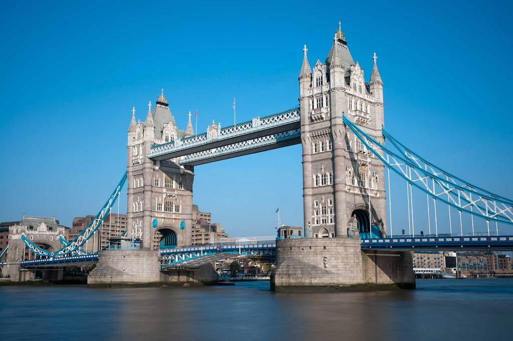

Достопримечательности Великобритании
Главные достопримечательности Великобритании — это исторический Лондонский Тауэр, загадочный Стоунхендж, величественный Эдинбургский замок, живописное озеро Лох-Несс и римские купальни в городе Бат. Ниже представлена подборка самых известных мест страны, разделенная по регионам.
Англия
Лондонский Тауэр (Лондон): старинная крепость на берегу Темзы, служившая дворцом, тюрьмой и зоопарком. Стоунхендж (Уилтшир): загадочное мегалитическое сооружение эпохи неолита, входящее в список Всемирного наследия ЮНЕСКО. Римские термы (Бат): прекрасно сохранившийся древнеримский комплекс общественных купален с горячими источниками. Озерный край (Камбрия): огромный национальный парк с живописными озерами, горами и старинными деревнями.
Шотландия
Эдинбургский замок (Эдинбург): древняя крепость на вершине потухшего вулкана, доминирующая над столицей Шотландии. Озеро Лох-Несс (Хайленд): глубокое пресноводное озеро, известное во всем мире благодаря легенде о чудовище Несси. Остров Скай: место с невероятными природными ландшафтами, острыми скалами и средневековыми замками.
Уэльс и Северная Ирландия
Замок Карнарвон (Уэльс): внушительная средневековая крепость, построенная королем Эдуардом I. Тропа Великанов (Северная Ирландия): уникальная прибрежная зона из 40 000 базальтовых колонн, образовавшихся в результате древнего извержения вулкана.
Уточните, какой регион вас интересует больше всего или сколько дней вы планируете потратить на поездку, чтобы составить точный маршрут.
